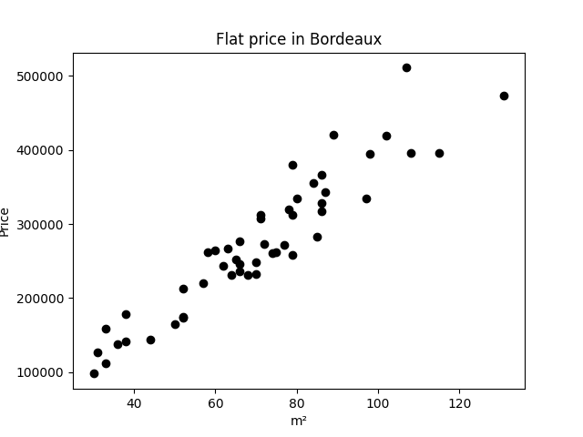
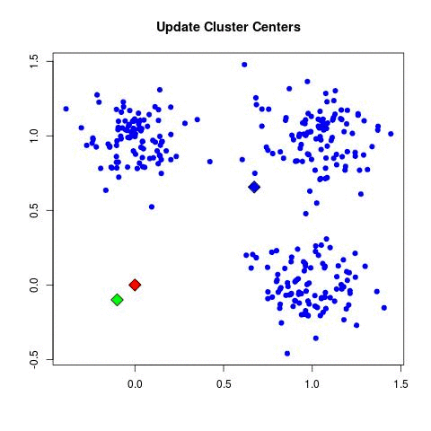
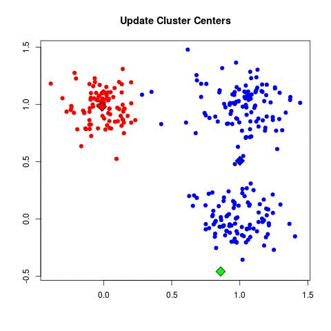
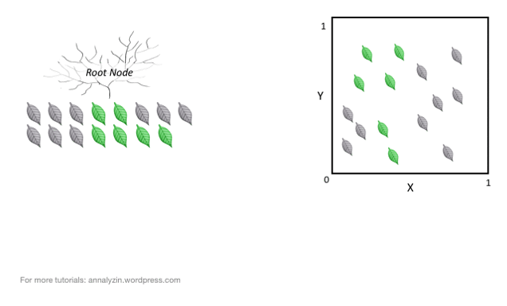
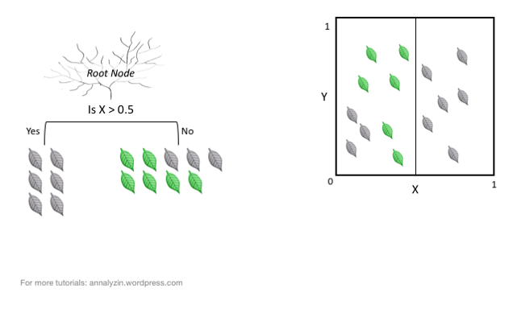
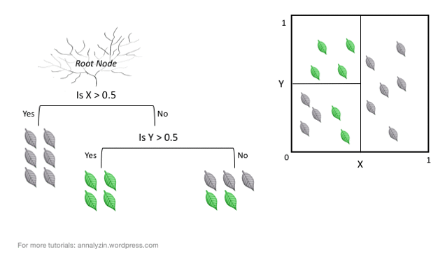

<!DOCTYPE html>
<html lang="en">
  <head>
    <meta charset="utf-8" />
    <meta name="viewport" content="width=device-width, initial-scale=1.0, maximum-scale=1.0, user-scalable=no" />

    <title>reveal-md</title>
    <link rel="shortcut icon" href="./favicon.ico" />
    <link rel="stylesheet" href="./dist/reset.css" />
    <link rel="stylesheet" href="./dist/reveal.css" />
    <link rel="stylesheet" href="./dist/theme/beige.css" id="theme" />
    <link rel="stylesheet" href="./css/highlight/base16/zenburn.css" />


    <script>
      document.write(
        '<script src="http://' +
          (location.host || 'localhost').split(':')[0] +
          ':35729/livereload.js?snipver=1"></' +
          'script>'
      );
    </script>
  </head>
  <body>
    <div class="reveal">
      <div class="slides"><section  data-markdown><script type="text/template">IA & Ethics  
2023-10-12  
Kedge Business School  
thomas.lentali@gmail.com  
</script></section><section  data-markdown><script type="text/template">
Netflix, Amazon Prime, Disney+, Tiktok, Spotify, Deezer, Cdiscount, Betclic, Google, Bing, Qwant, DuckDuckGo, Airbnb, Apple, Facebook, Instagram, Uber, Deliveroo, ChatGPT

...

<p class="fragment" data-fragment-index="1">Nous utilisons de l'IA.</p>
<p class="fragment" data-fragment-index="2">Nous renforçons ces IA.</p>
</script></section><section  data-markdown><script type="text/template">

</script></section><section  data-markdown><script type="text/template">
### 1997 - IBM Deep Blue


Traditional programming
</script></section><section  data-markdown><script type="text/template">

</script></section><section  data-markdown><script type="text/template">
### 2016 - Google DeepMind AlphaGo


Machine learning
</script></section><section  data-markdown><script type="text/template">

</script></section><section  data-markdown><script type="text/template">
La différence en 20 ans ?

<p class="fragment" data-fragment-index="1">Big Data.</p>
</script></section><section  data-markdown><script type="text/template">
Comment ça marche ?
</script></section><section  data-markdown><script type="text/template">

</script></section><section  data-markdown><script type="text/template"><!-- .slide: data-transition="fade" -->


</script></section><section  data-markdown><script type="text/template"><!-- .slide: data-transition="fade" -->


</script></section><section  data-markdown><script type="text/template">

</script></section><section  data-markdown><script type="text/template">

</script></section><section  data-markdown><script type="text/template">
Clustering
</script></section><section  data-markdown><script type="text/template"><!-- .slide: data-transition="fade" -->


</script></section><section  data-markdown><script type="text/template"><!-- .slide: data-transition="fade" -->


</script></section><section  data-markdown><script type="text/template"><!-- .slide: data-transition="fade" -->


</script></section><section  data-markdown><script type="text/template"><!-- .slide: data-transition="fade" -->


</script></section><section  data-markdown><script type="text/template"><!-- .slide: data-transition="fade" -->


</script></section><section  data-markdown><script type="text/template"><!-- .slide: data-transition="fade" -->


</script></section><section  data-markdown><script type="text/template"><!-- .slide: data-transition="fade" -->


</script></section><section  data-markdown><script type="text/template"><!-- .slide: data-transition="fade" -->


</script></section><section  data-markdown><script type="text/template"><!-- .slide: data-transition="fade" -->


</script></section><section  data-markdown><script type="text/template"><!-- .slide: data-transition="fade" -->


</script></section><section  data-markdown><script type="text/template"><!-- .slide: data-transition="fade" -->


</script></section><section  data-markdown><script type="text/template"><!-- .slide: data-transition="fade" -->


</script></section><section  data-markdown><script type="text/template"><!-- .slide: data-transition="fade" -->


</script></section><section  data-markdown><script type="text/template"><!-- .slide: data-transition="fade" -->


</script></section><section  data-markdown><script type="text/template">
Classification
</script></section><section  data-markdown><script type="text/template"><!-- .slide: data-transition="fade" -->


</script></section><section  data-markdown><script type="text/template"><!-- .slide: data-transition="fade" -->


</script></section><section  data-markdown><script type="text/template"><!-- .slide: data-transition="fade" -->


</script></section><section  data-markdown><script type="text/template"><!-- .slide: data-transition="fade" -->


</script></section><section  data-markdown><script type="text/template"><!-- .slide: data-transition="fade" -->


</script></section><section  data-markdown><script type="text/template">
Recommendation
</script></section><section ><section data-markdown><script type="text/template">

</script></section><section data-markdown><script type="text/template">
Target detecte une femme enceinte via recommandation de produit

[[Source](https://www.forbes.com/sites/kashmirhill/2012/02/16/how-target-figured-out-a-teen-girl-was-pregnant-before-her-father-did/)]
</script></section></section><section  data-markdown><script type="text/template">
Deep learning (yolov3)


</script></section><section  data-markdown><script type="text/template">
Problème d'explicativité
</script></section><section  data-markdown><script type="text/template">

</script></section><section  data-markdown><script type="text/template">

</script></section><section ><section data-markdown><script type="text/template">
Identifier les thèmes éthiques.
</script></section><section data-markdown><script type="text/template">
- le 07 qui t'empeche d'avoir un credit
</script></section><section data-markdown><script type="text/template">

</script></section><section data-markdown><script type="text/template">
- Biais de données 
- Biais de représentation 
- Biais de confirmation 
- Biais de sélection d'échantillon
- Biais d'étiquetage
- Biais cognitif
- Biais socioculturels
- Biais de classe
- Biais de rétroaction en boucle</script></section></section></div>
    </div>

    <script src="./dist/reveal.js"></script>

    <script src="./plugin/markdown/markdown.js"></script>
    <script src="./plugin/highlight/highlight.js"></script>
    <script src="./plugin/zoom/zoom.js"></script>
    <script src="./plugin/notes/notes.js"></script>
    <script src="./plugin/math/math.js"></script>
    <script>
      function extend() {
        var target = {};
        for (var i = 0; i < arguments.length; i++) {
          var source = arguments[i];
          for (var key in source) {
            if (source.hasOwnProperty(key)) {
              target[key] = source[key];
            }
          }
        }
        return target;
      }

      // default options to init reveal.js
      var defaultOptions = {
        controls: true,
        progress: true,
        history: true,
        center: true,
        transition: 'default', // none/fade/slide/convex/concave/zoom
        slideNumber: true,
        plugins: [
          RevealMarkdown,
          RevealHighlight,
          RevealZoom,
          RevealNotes,
          RevealMath
        ]
      };

      // options from URL query string
      var queryOptions = Reveal().getQueryHash() || {};

      var options = extend(defaultOptions, {}, queryOptions);
    </script>


    <script>
      Reveal.initialize(options);
    </script>
  </body>
</html>
